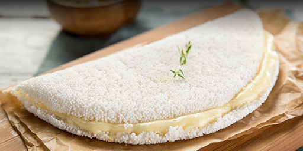

Tapioca de Queijo

Descrição
Tapioca ou goma é a fécula extraída da mandioca, usualmente preparada em forma granulada.
Trata-se do ingrediente principal de algumas iguarias típicas do Brasil, como o beiju, quitute indígena descoberto pelos portugueses em Pernambuco no século XVI.
É muito comum o uso do termo tapioca para referir-se ao beiju.
Tempo de preparo: 15 minutos
Porções: 1 pessoa
Nivel: Fácil
Ingredientes:
- 100 g goma> de tapioca
- 4 colheres (sopa) de água (75 ml)
- 1 xícara (chá)> de mussarela ralada (100 g)
Modo de preparo:
- Coloque a goma de tapioca em uma frigideira anti aderente, sobre fogo baixo.
- Espalhe a goma de tapioca até obter o formato de um panqueca.
- Assim que a tapioca estiver firme, coloque o queijo sobre a tapioca. Dobre a tapioca ao meio formando uma meia lua. Sirva a seguir.
HOME